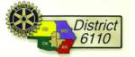
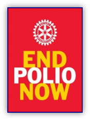
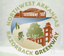
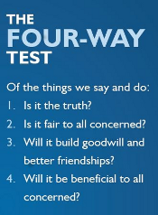

Connect with us:

Club President:
Robert Evan Swearingen
President-Elect:
Michelle E. Fittro
Secretary:
Nicole Crawford
Treasurer:
Matt Brasel
Club Comm. Offcr:
Nate Bachelor
iPast President:
James T. Moore
Visit
Rotary District 6110

Meeting Options!
Area Meetings

Site Links:
Medical Supply Network
CCFA
ALS Walk Info
Rotary Razorback Trail


Rotary is an organization of business and professional leaders united worldwide who provide humanitarian service, encourage high ethical standards in all vocations, and help build goodwill and peace in the world.
Rotary club membership represents a cross-section of the community's business and professional men and women. The world's Rotary clubs meet weekly and are nonpolitical, nonreligious, and open to all cultures, races, and creeds. More info.....
Rotary membership provides the opportunity to: Become connected to your community. Work with others in addressing community needs. Interact with other professionals in your community; assist with RI's international humanitarian service efforts. Establish contacts with an international network of professionals. Develop leadership skills. Involve family in promoting service efforts. More info.....